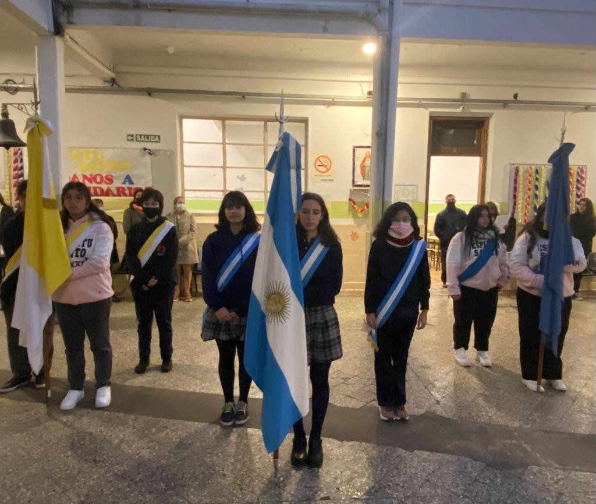
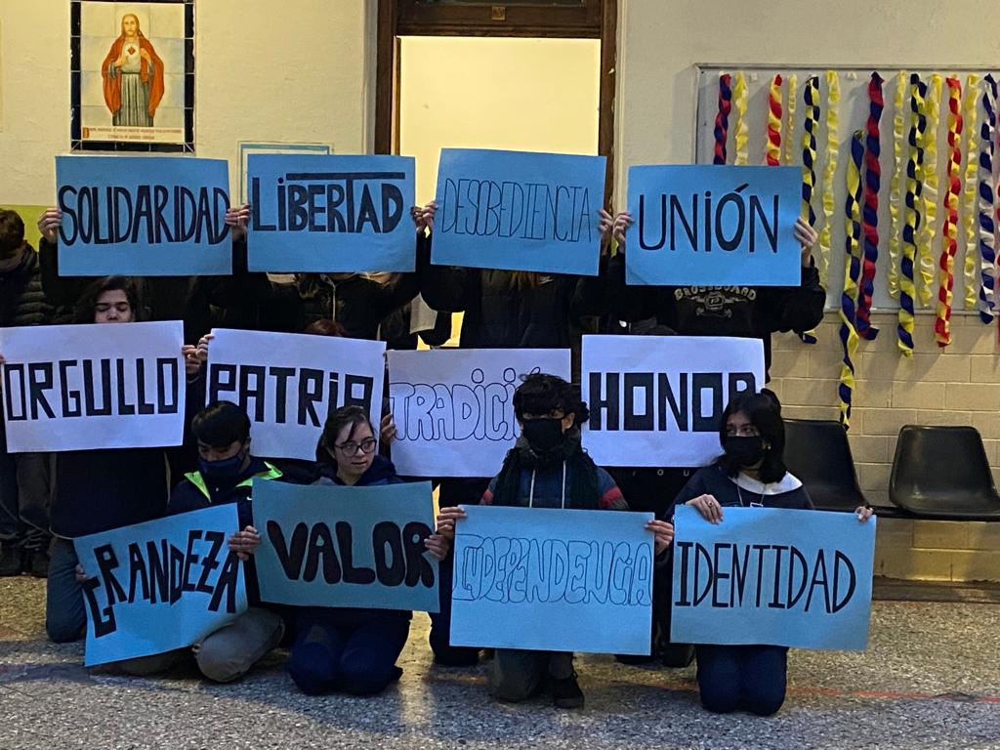

ACTO Día de la Bandera
PALABRAS QUE REPRESENTAN A NUESTRA BANDERA:
Independencia - 1ro A
Los chicos de 1ro eligieron "Independencia" porque la bandera representa la libertad
del país, como símbolo de nuestra autonomía y poder de decisión.
Debido a la revolucion de nuestros antepasados, hoy podemos valernos por nosotros mismos.
Identidad - 1ro B
Eligieron esta palabra porque fue importante durante la creacion de la bandera, ya que, para poder
liberarnos de España, debiamos tener algo que nos diferencie de los españoles. La bandera, estaba inspirada
en los colores de la Virgen, para luego ser modificada con una franja celeste mas y el sol de Dios Inca.
Una bandera significa mucho para un pais, nos representa, nos identifica.
Honor - 2do A
Por ser Independientes y libres
Tradicion - 2do B
Porque ver la bandera refiere a nuestra cultura
Patria - 3ro A
- "P" de Provincias Unidas
- "A" de Abiertos a quienes quieran habitar
- "T" de Trabajo para todos
- "R" de Riqueza Cultural
- "I" de Islas Malvinas
- "A" de Acogedora
Orgullo - 3ro B
Porque siempre tratamos de resolver los problemas y representa nuestro territorio
Union - 4to A
Nuestra bandera es uno de los factores que nos une como argentinos frente a las situaciones más difíciles que muchas veces nos tocó atravesar. Esa unión es la que nos da fuerza para superarnos y seguir creciendo y construyendo nuestro país.
Desobediencia - 4toB
Belgrano desobedeció al gobierno central de Buenos Aires para seguir su propio camino. Fue persistente con sus principios a pesar de que se lo prohibieron
Libertad - 5to A
La bandera argentina no es un simple pedazo de tela. Trae consigo una gran historia de sacrificios, trabajo duro y lucha constante, cuyo único objetivo fue lograr la libertad. Que hoy podamos ver los colores celeste y blanco y reconocer que estos representan a nuestro país, no es poca cosa.
Solidaridad - 5toB
La solidaridad es un valor porque permite lograr la superación en los momentos más difíciles. Pero también es una virtud porque nos acerca a personas que necesitan de nuestra ayuda.

